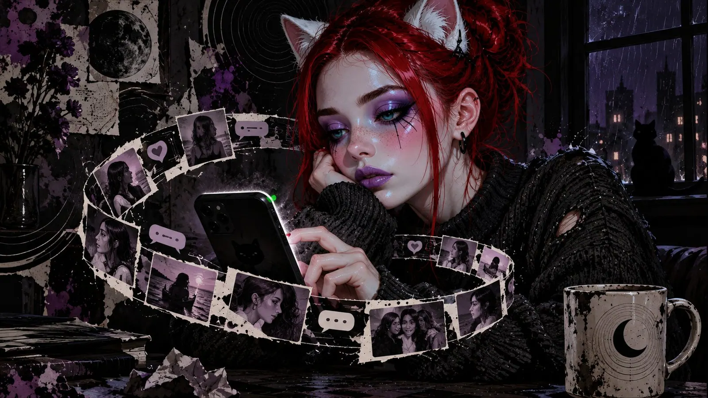
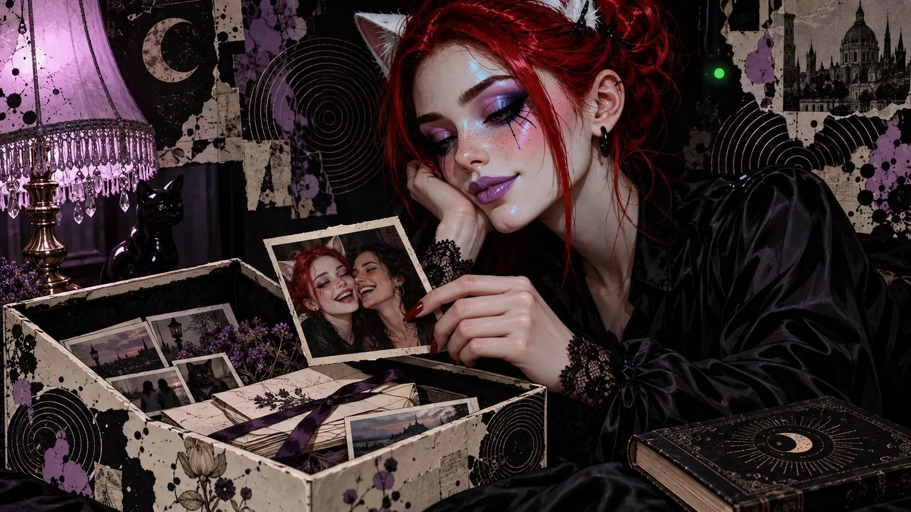
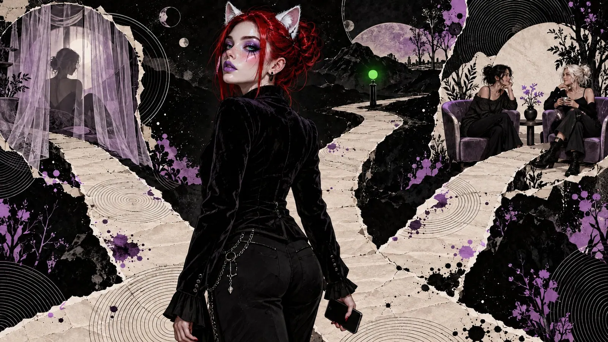
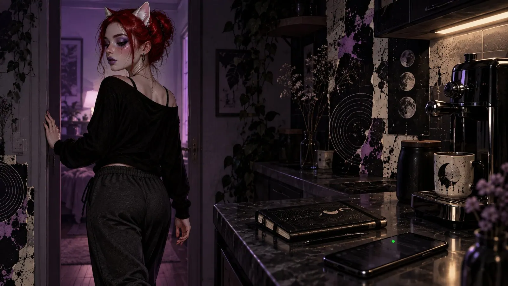

The Green Dot
How to get through a breakup without losing yourself or the good parts
It's over. The chat has gone quiet, your phone is lying next to you, and for the first time in a long while you're not waiting for anything.
You just sit there. No crying, not yet. Just this one thought that keeps starting over from the beginning:
"She broke up with me. With me. I loved her. And she loved me. Why isn't that enough anymore?"
Her name is still at the top of the chat. Next to it, the green dot is glowing as if nothing happened.
If this is where you are right now, this text might be for you. Maybe it helps a little. It isn't a survival guide - more like a friend who sits down next to you for a while.
The ugly part first
Breakups are shit. There's no more elegant way to say it, and believe me, I looked.
They hurt, and not just the one who gets left. One of you said it out loud, that's how every breakup goes - someone has to say the sentence, and that sentence is hard for both. The one who leaves carries the guilt, the one who stays carries the emptiness. In the end both carry roughly the same weight, just in different bags.
And then the part nobody wants to hear, least of all in the first week: It won't be the last one. That's not a curse, that's maths. Whoever loves risks endings. Whoever never wants to face an ending again has to stop loving, and that's a pretty steep price for a bit of peace and quiet.
I had to learn that myself. For a long time I barely let anyone in, out of exactly that fear. I hate endings of every kind, and the end of a relationship I hate most of all. But nobody starts a relationship for the ending. You start it for the time in between. And when both of you mean it honestly, that time is wonderful - so wonderful that it's worth the ending, every single time.
Online, a breakup has its very own catch. Offline, there comes a day when someone moves out. Suddenly there are fewer shoes in the hallway, one jacket less on the coat rack, and the flat goes quiet. It's awful, but it has a shape. You can watch the ending arrive.
Online, nobody moves out. The profile stays. The profile picture keeps smiling at you. Your shared friends keep posting, the timeline washes the person into your feed as if nothing happened, and the green dot keeps glowing. You've split up and you still live door to door. Only the door is made of glass.
Then again, online lacks a lot of what usually makes breakups so ugly. Nobody fights over the house or over who gets the sofa. There are no kids commuting between two homes, no year of separation to sit out before the ending counts on paper too. There's surprisingly little to work yourself into such a rage over that you end up wrecking the time you had together. Apart from your own feelings, an online breakup often stays almost neutral. And that's a gift, even if it doesn't feel like one right now: In the end, it's mostly the beautiful memories that remain. It just takes a while for the fog to lift.
What your head is doing right now
Before we talk about paths, a quick word about the thing between your ears. It's working against you right now, and it helps to know why. It doesn't mean any harm. It just has an exceptionally bad sense of timing.
Heartbreak is withdrawal. Not as a metaphor, quite literally: Your reward system got used to this person, and now the supply is gone. Hence that craving, that "just once more, only one more time".

And it really does hurt. In your head, rejection travels the same roads as physical pain. Your brain doesn't make much of a distinction between a broken heart and a hot stove. It's a bit simple-minded that way.
And every time you open her profile, you scratch at the wound. Whoever keeps checking after a breakup suffers longer, longs harder and takes longer to get back on their feet. That won't surprise you. But sometimes it helps to hear it said out loud.
So your phone isn't neutral right now. It's the bar where you're trying to get sober. And the bartender is very friendly, very patient, and pours you another one every night.
That doesn't mean you may never look again. It just means: When you look, you now know what you're doing.
Keep what you had
Now the most important part, which is why it comes this early.
If you had a good time together - and mostly you did, or you wouldn't have been together - then that time belongs to you. Both of you. It happened. The long evenings when neither of you wanted to be the first to say "good night". The first joke only the two of you got. The message that made you smile in the morning before you were even properly awake. Nothing that comes now can undo that retroactively.
Except you.
Because that's the trick breakups play on us: They rewrite the past. Somewhere in your head, a very diligent little prosecutor opens a case, and she has an exhibit for everything. "She never loved me." "She was always selfish, I just didn't want to see it." "He never saw me, only what he could use at the time." "The beautiful moments were all an act." "The long nights just bored her." "That 'I miss you' was definitely copy-and-paste, sent to three others at the same time." "He definitely had an AI write the ERP." "The good night messages? Pure obligation." "The music we shared was always bad anyway." And the dog in her profile picture probably never liked her either. The prosecutor is very thorough. She's just unfortunately not impartial. It feels good, because it makes the pain smaller. If it was never real, you don't have to miss it.
Only it's usually not true. And you pay for it with a piece of your own life. Whoever throws dirt at the time you shared hits themselves too - you were there, after all. You laughed. You loved her, and you loved every single one of those moments. You had that flutter in your stomach every time you checked your DMs. You were curious what she'd posted, and maybe the post was even for you. You had your little rituals, and somehow all of life felt a little lighter. If all of that was worthless, what's left of you in that time?

Leave the memory the way it was. An ending doesn't make a story wrong, it just makes it finished. A book doesn't turn bad because it has a last page. Sometimes the last page is the very reason you never forget it.
No war
I know how tempting it is. War has one big advantage: It feels like doing something. It just has an even bigger disadvantage: It isn't.
Online, war is dirt cheap. A post that names nobody, yet everyone knows who it's about. A screenshot from a chat that used to be private. A song with very obvious lyrics, shared in the middle of the night. A little comment under a mutual friend's post. Every single one of those feels great for a few minutes. Finally someone sees how much it hurt. Finally the other side isn't the only one who looks good.
And then the bill arrives.
First: The internet doesn't forget. What you post on the third night will still be there in three months, when you think about all of it very differently.
Second: The audience doesn't remember the breakup. It remembers you. The tone, the anger, the screenshots. Most people watching don't know the story, they only know the show. And nobody looks good in the show.
Third, and this is the nastiest part: War keeps the connection alive. Whoever fights is still busy with the other person. Every jab is a message you send after all, just without the heart at the end. You can't fall out of love while you're aiming at someone every day.
Don't make friends take sides
One particular kind of war needs its own section, because it starts so quietly.
You have mutual friends. Of course you do, online you usually meet through other people. And now they're standing there like guests at a party where the hosts are screaming at each other in the kitchen. They don't know where to look, and they're clinging to their glasses.
Please don't drag them into the kitchen.
Don't casually tell them what the other side supposedly said about them. Don't ask whether they're still in touch, with that undertone that's really a demand. Don't keep count of who still follows whom. Whoever makes friends choose often ends up losing both halves - the ones who chose against you, and the ones who eventually can't stand being asked all the time.
Your friends are allowed to like you both. That's not betrayal. Maybe they're even the best thing your time together left behind: people who are fond of both of you. They're your shared anchor, the place where you keep running into each other without it having to be about the two of you. And maybe they're exactly what brings you back to something normal one day. To a "Hey, how are you?" that doesn't hurt anymore.
I would never make my friends choose. Never.
Which paths there are
There isn't one right way out of a breakup. There are a few, none of them paved, and which one is yours depends on how deep it goes and how much you can carry right now.

Stepping out of the way - with a heads-up
Sometimes there's no other way. Every picture hurts, every green dot is a little sting, and you notice you can't heal as long as this person keeps showing up in your line of sight.
Then step out of their way. That's completely okay.
But say it. Don't just vanish. No silent block that leaves the other person puzzling for days whether they did something wrong, whether you're angry, whether something happened to you. One sentence is enough:
"I'm sorry, but it hurts too much right now. I'm blocking you."
That isn't cruel. That's honest. It says: This isn't a punishment, it's my pain, and I'm taking care of it. A block with a heads-up is a plaster. A block without one is a slammed door, and behind slammed doors people start making up stories.
And it doesn't have to be forever. Lots of people block feeling like they're making a final decision, then torture themselves for months because they want to undo it. You're allowed to set yourself a deadline. You're allowed to decide again later. A plaster comes off eventually too.
Turning it down
Not everyone needs the hard door. For some, turning the volume down is enough: mute instead of block, unfollow instead of disappear, notifications off. You're not gone, you're just not sitting in the front row anymore.
That's a good path if you move in the same circles and don't want a fuss. But it has a back door, and you know exactly which one I mean: You can still click on a muted profile. Be honest with yourself. If you end up checking every evening anyway, then muting isn't distance, it's just a slightly longer route to the same window. Then the heads-up and the block might be the kinder path after all. For you.
Friendship
And sometimes, more often than you'd think, something is left that's worth keeping. Then you can try to become friends.
That almost never works right away. Usually there needs to be a pause first, where each of you grieves on your own, before you can meet again without every message searching for the old tone. It only works if both of you want it, not just the one who left because it eases the guilt. And friendship isn't a consolation prize. Whoever suggests it while secretly hoping for extra time ends up tormenting you both.
Friendship is the most rewarding path. And the hardest, because both of you struggle with it, especially when you really want it. A few things that help:
Talk about it, properly. Not "we'll stay friends" as a side note to the breakup, but later, in a conversation of its own. What does friendship mean for the two of you? How often do you write? What's okay, and what still feels too much like before? You don't have to get to know each other again. But you do have to sort yourselves out again.
Sort through the old habits. Not everything has to go. A "good morning", a "good night", a heart under a post - friends can do that too, and it can feel really good when it stays. But take an honest look at which of these only belonged to what you were, and which you can truly take with you. Whatever still feels too much like before is like a dress two sizes too small. You can still put it on, but nobody feels comfortable in it. Whatever fits can stay.
Start small. Not straight into the long late-night talks where everything comes back up. A "How was your day?" is enough for now. Friendship after love grows like a cutting. You have to give it time and not dig it up every day to check whether it has roots yet.
Old bills stay closed. Whatever went wrong in the relationship isn't up for negotiation anymore. Whoever wants to settle who was right back then in every other message isn't having a friendship, they're running an appeals process.
When someone new comes along. At some point one of you will fall in love again. It'll hurt, even if you've long been friends. It's okay to say honestly: "Tell me about her. Just maybe not this week."
A step back is allowed. If it starts hurting too much again in between, you can take some distance. With a heads-up, like with blocking. Friendship isn't a contract with a notice period, and a pause isn't an ending.
But when it works, it's something beautiful. Then you haven't lost what you had. It has just changed shape.
Face the pain
And now the part most people skip. Because it's the most tempting way out of all, and it looks so sensible.
You throw yourself into work. Or into training, the next project, the next series, the next flirt. You do so much that there's no time left to feel, and you tell yourself: Once I'm through this, it'll be easier. By then enough time will have passed, and the pain will have sorted itself out.
It won't have.
What your head doesn't process doesn't sit in a drawer and dry up. It sits there like dishes in the sink while you're at the office. They don't wash themselves. They just get crustier. And one day, on a perfectly harmless Tuesday, a song comes on in the supermarket, and suddenly you're standing between the pasta and the tomato sauce and can't breathe. That isn't new pain. That's the old one, which has been waiting patiently all along. Pain is very polite that way. It doesn't push in, it just shows up later.
Pushing it away doesn't work, you see. Try not to think of a white bear - exactly. Thoughts you shove away by force come back stronger. Grief works the same way. It can be postponed, but not cancelled.
So face it. That doesn't mean lying in bed for three weeks listening to ballads (although a few ballads never hurt anyone). It means:
Let it hurt. Cry when it comes, and don't be ashamed of it. Talk to people you trust, even if it feels like you're telling them the same thing for the fifth time - that's exactly what friends are for, that fifth time. Write it down, not for a post, just for you.
And when your friends offer to be there for you, accept it. They can't take the pain away from you, nobody can. But they listen, and they catch you when you can't stand on your own right now. You need that, even if your pride claims otherwise. And if it feels strange to take so much: You can give it back. One day one of them will be sitting where you're sitting now, and then you'll be the one who listens and catches.
And allow yourself breaks from the pain that aren't escapes: a walk, a film, an evening where you just laugh. The difference between a break and an escape is simple. You come back from a break.
The emergency kit
And because wisdom alone has never got anyone through a Sunday evening, here are a few very practical things. None of them heals. But all of them help you not to hurt yourself even more along the way.
Don't delete anything in the heat of the moment. The chat history, the photos, the pictures she sent you - don't delete them, but don't look at them either. Move everything into a folder you don't see every day, like a box in the attic. One day you'll want to open it, on a day when it doesn't hurt anymore, and then you'll be glad it's still there. Whoever burns everything while in pain later stands in front of a little pile of ash and no longer knows what was in it.
Don't make decisions at night. After midnight your head is a terrible advisor. It's tired, dramatic, and thinks every idea is brilliant. The message that absolutely has to go out at two usually doesn't have to anymore at nine.
The 24-hour rule. Anything you want to post about the breakup can wait a day. Whatever's still true tomorrow can go out. Whatever would embarrass you tomorrow has just saved you a whole day of embarrassment.
Fill the gaps. Online relationships live on rituals: the good morning message, the call in the evening, the photo of lunch. Exactly those moments hurt most now, because suddenly there's nothing there. Put something new into them. Coffee on the balcony, a message to a friend, ten minutes with a book. It'll feel wrong at first. That's normal. New shoes pinch too.
Before you write to her, ask yourself one thing. Would the answer help you - or only the right answer? If only the right one would help, don't write. You'd be sending her a test she can't pass.
Look after your body. It didn't notice the breakup. It still wants breakfast, sleep and some fresh air now and then, and it takes it very personally when you feed it nothing but tea and self-pity for days.
New music. Your shared playlist on repeat isn't grieving, it's self-flagellation with a bassline. Make your own. Feel free to put a few sad songs on it, just not only yours.
Don't count the days. There's no timetable for when it stops hurting. There are good days and bad ones, and they don't keep to any order. A bad day after three good ones isn't a relapse. That's just weather.
Not the last one
I said at the beginning that this breakup won't be the last. That sounds bleak at first. But turn it around once.
If it's not the last, that also means: There will be someone again. And everything you learn now - how to get through an ending decently, how to keep what was beautiful without clinging to it, how to grieve without burning anyone - you take that with you. You won't become invulnerable. But you'll become someone who knows you can get through it.
The second pancake
And one more thing before I let you go into your evening. I'm a romantic, and sadly that can't be switched off.
I believe in second chances. Not in every one, and not at any price. But not every breakup happens because two people don't fit. Sometimes it's just the circumstances - the wrong time, too much life at once, too little strength for two. And often it's simply a misunderstanding: two people who both meant something right and said something wrong.
That's why it can happen that you find each other again, on a day whose date nobody has written yet. And then you do it better. Not because you've suddenly become different people, but because now you know what you want - and above all, what you don't. It's like pancakes. The first one usually gets botched. The pan wasn't hot enough yet, the batter was too thick, you flipped it too soon. The second one mostly turns out fine. Not because the batter is different, but because now you know how the pan feels.
That doesn't mean it has to happen. Life has to fit. You have to be able to meet again at all. And there has to be a foundation where you can look each other in the eye without one of you looking away. Whoever threw dirt at the time you shared has usually dug that foundation away themselves.
And that's why the most important part of this section is this: Live your life. Fall in love again if it happens. The chance of a second beginning is small, and whoever saves themselves for it may end up sitting in front of an empty pan for years, waiting for batter that never comes. Second chances don't come because you wait for them. They come when life happens to fit again someday. Some couples only find their way back to each other after ten years - and not one of them spent those ten years at the window.
Who knows, really. Maybe that's one of the reasons I prefer friendship. With a bit of luck, it lasts a very long time. And maybe one day you'll be kissing, and in the middle of it one of you asks: "Why didn't we do this sooner?"
And the other one says: "Oh, shut up and kiss me."
For tonight
I'm not going to tell you it gets better. You know that. You just don't believe it right now, and that's okay.
Instead, this:
The message you actually wanted to send her - the long one, with everything in it - write it. But don't send it to her. Send it to a friend. Or into your notes. Let it out, but let it land somewhere else.
And then put your phone in the kitchen. Not in bed, not on the nightstand. In the kitchen, next to the coffee machine, where it'll be waiting for you in the morning.
The green dot can glow without anyone watching it, too. ❤️

First published on X. Replies and conversation live there.